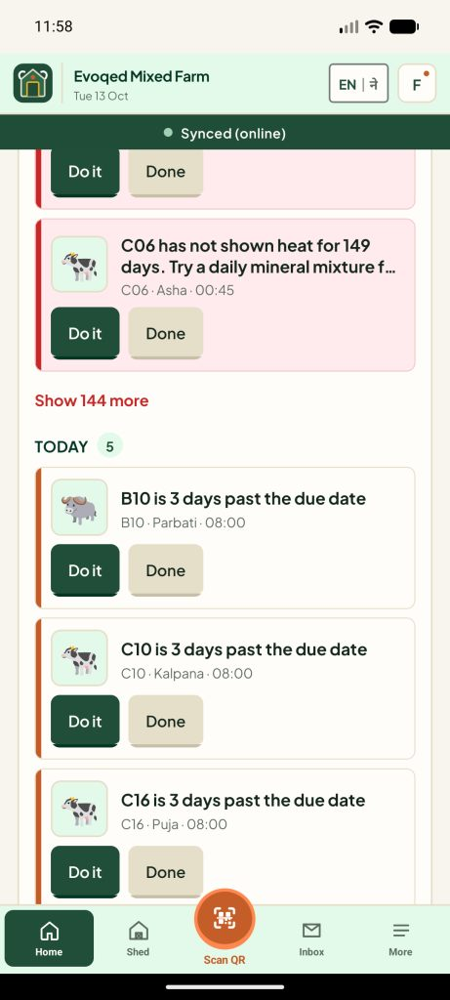
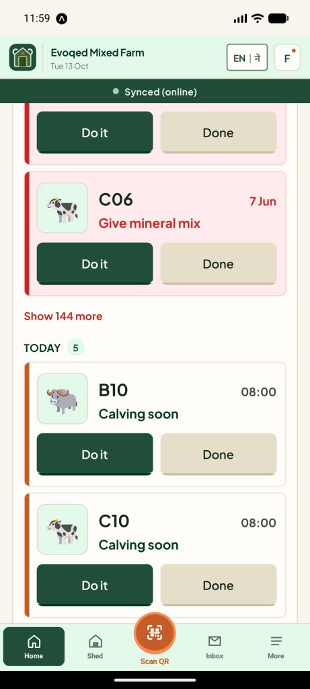
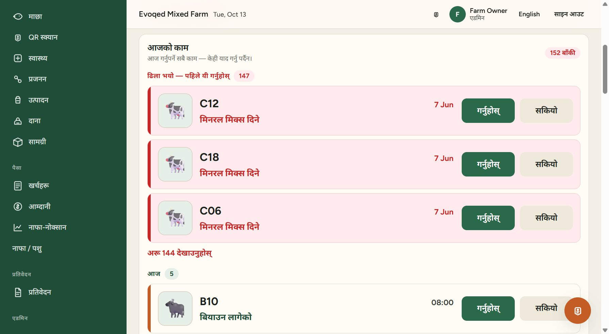
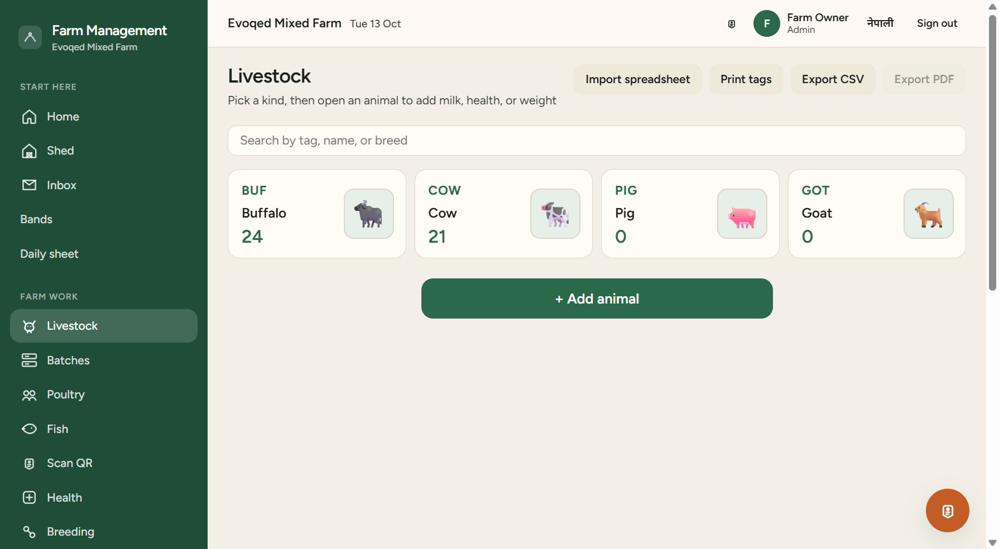
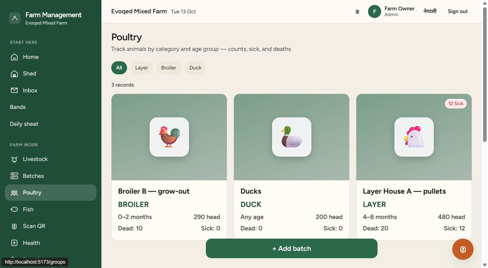
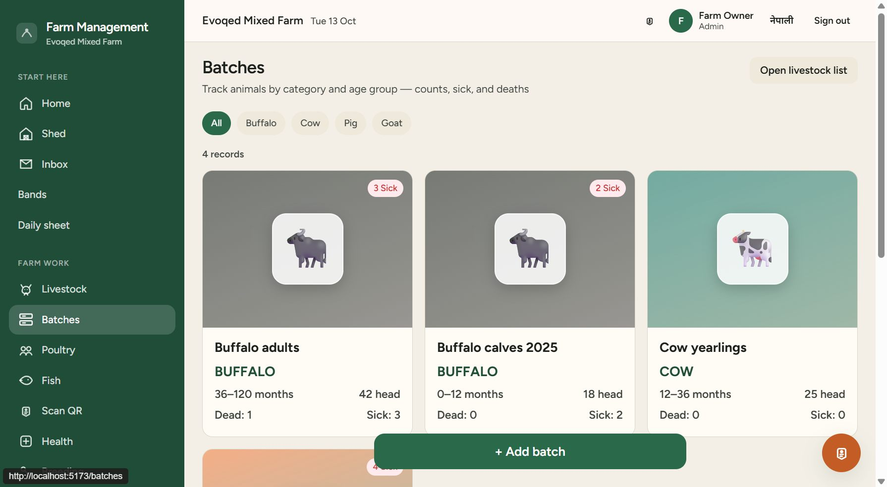

Kharka Farm OS · Livestock monorepo · 13 Oct 2026
Live at https://evoqedlivestockfarm.vercel.app · Six commits pushed to main, from 53d7175 to 4ae3858
In one paragraph. Yesterday was about making the daily shed work quicker and clearer for workers, on
the phone and on the website. The Shed page now shows which animals are not done yet. Scanning an
animal's QR asks what you want to record: Milk, Vaccine or Breeding. The home screen has a
Today's work list (late, today, tomorrow), which was then made bigger and simpler, with one
short, standard label per job in English and Nepali. Animal pictures now appear on the livestock,
batch, poultry and fish screens. Two bugs were fixed: an old milking round from 25 September that took
over the Shed page, and the "152 left" counter flickering on the phone.
1. Shed: "Not done yet" list
When no round is running, the Shed page shows today's session for the chosen work (for example morning milking):
progress such as "19 of 35 done", and every animal still waiting.
Waiting animals are shown in light red with their photo, so they stand out. Tapping one starts
the round and opens that animal straight away.
The phone keeps a copy of the list, so it still shows when offline.
New API endpoint: GET /v1/rounds/today?mode=…&session=….
Available on the phone and on the website.
2. Scan QR: choose what to record
After scanning an animal's QR code, or picking it by hand, a dialog shows the animal's photo, number, name and pen.
It then asks one question: Milk, Vaccine or Breeding. Breeding
opens a second choice: heat, service, pregnancy check or calving.
"Other records" still gives access to every other form (weight, treatment and so on).
Each choice only appears for people whose role is allowed to record it.
On the website, the Scan page's text search opens the same dialog when it finds one exact match, or shows a list
with photos when several animals match.
3. Today's work
The home screen of the app and the website dashboard now start with the worker's list for the day, so nothing has to be remembered:
Three groups: Late — do these first (light red), Today and Tomorrow.
Jobs assigned to the signed-in person come first and are marked For you.
Do it opens the right form with the animal already filled in. Done ticks the job off.
Band jobs can only be completed by scanning.
Long groups are shortened, with a "Show more" link.
Bigger, simpler rows (afternoon change)
Each job used to show the long sentence written by the reminder system, for example "C10 is 3 days past the due date".
Each row now shows:
The animal number in big text and a bigger picture.
One short standard label for the type of job, such as Calving soon (बियाउन लागेको),
Give vaccine (खोप दिने), Watch for heat (रजस्वला हेर्ने), Pregnancy check (गर्भ जाँच) or
Dry off (सुकाउने). All 35 job types have an English and a Nepali label, using the words the app already uses.
The time on the right. For late jobs, the date it was due ("7 Jun") instead of a
time that doesn't say which day.
Bigger Do it / Done buttons. On the phone they fill the width of the row.

Phone, before: long sentences and small buttons.

Phone, after: animal number, short label, time, big buttons.

Website dashboard in Nepali: late jobs show the due date, today's jobs show the time.
4. Animal pictures everywhere
Livestock: each species card (Buffalo, Cow, Pig, Goat) shows its picture, and each row in the herd
list shows the animal's own photo, or the species picture if no photo was uploaded.
Batches, Poultry and Fish: each card shows a large picture: buffalo or cow for livestock batches;
chicken, rooster or duck for layer, broiler and duck flocks; a fish for Rohu, Catla and other ponds. The red "Sick"
badge stays on top.
The same pictures are used on the phone and the website, including in the scan dialog, the Shed list and Today's work.

Livestock: species cards with pictures.

Poultry: broiler, duck and layer flocks.

Batches: livestock groups, with the sick count still shown.
5. Bugs fixed
An old milking round took over the Shed page
A morning milking round from 25 September (19 of 35 milked) was never finished. Because it was
still "active", the Shed page always reopened it instead of showing today's list.
The API now closes ("abandons") any round still open from before yesterday, and records this in the audit log.
Yesterday's round is kept, because a Nepal morning starts before midnight UTC.
The website and the phone also ignore an old saved round.
The live database was cleaned: the old rounds were closed and today's morning list showed 0 of 35 done.
The "152 left" counter kept flickering on the phone
Every background sync (saving data, caching photos) reloaded Today's work and showed a spinner in place of the
counter. Now the list refreshes when the screen opens, and at most every 30 seconds in the background without a
spinner. On the emulator the counter stayed steady for the whole test.
6. Quality checks
Check
Result
Typecheck (all packages)
PASS
Tests
318 PASS API 252 · web 30 · mobile 20 · contracts 16
Lint
0 ERRORS 8 older warnings in other web pages; none in the new files
Checked by hand
Website in the browser (English and Nepali) and the app on the Android emulator
New API tests cover the "not done yet" list and closing old rounds.
Close milking rounds left open from an earlier day
194a16a
10:09
Phone: stop the counter flicker; pictures on livestock, batches, poultry and fish
24ac6ab
10:45
Website: pictures on livestock, batches, poultry and fish
4ae3858
11:59
Today's work: bigger rows, short standard labels, date for late work
8. Still to do
Status
Task
TO DO
Build a new Android app so phones get these changes:
cd apps\mobile; eas build -p android --profile preview. The website is already live.
TO DO
In Vercel, add SPARROW_SMS_TOKEN, SPARROW_SMS_FROM,
FCM_SERVICE_ACCOUNT_JSON, NOTIFICATION_CRON_SECRET and CRON_SECRET, then redeploy.
TO DO
In GitHub, add the secrets API_BASE_URL and NOTIFICATION_CRON_SECRET
and the variable ENABLE_NOTIFICATION_CRON=true.
TO DO
Rotate the Firebase (FCM) private key, because it was shared in chat.
Found afterwards (14 Oct). Today's work showed 147 late jobs, some from June. The cause: on Vercel the
nightly job that expires old jobs and closes repeated reminder steps never ran. It now has a trigger (Vercel Cron, once
the secrets above are set). It was run once by hand: 100 old jobs expired and 20 repeated reminders were closed.